전자기사 (2017-09-23 기출문제)
1과목: 전기자기학
1. 영구자석 재료로 적당한 것은?
- 잔류자속밀도(Br)는 크고 보자력(Hc)은 작아야 한다.
- 잔류자속밀도(Br)는 작고 보자력(Hc)은 커야 한다.
- 잔류자속밀도(Br)와 보자력(Hc)은 모두 작아야 한다.
- 잔류자속밀도(Br)와 보자력(Hc)은 모두 커야 한다.
(정답률: 70%)

2. B-H 곡선을 자세히 관찰하면 매끈한 곡선이 아니라 B가 계단적으로 증가 또는 감소함을 알 수 있다. 이러한 현상을 무엇이라 하는가?
- 퀴리점(Curie point)
- 자왜현상(Magneto-striction effect)
- 바크하우젠 효과(Barkhausen effect)
- 자기여자 효과(Magnetic after effect)
(정답률: 68%)
3. 공기 중에 놓여진 반지름 6cm의 구도체에 줄 수 있는 최대 전하는 약 몇 C인가? (단, 이 구도체의 주위공기에 대한 절연내력은 5×106V/m이다.)
- 1×10-5
- 1×10-6
- 2×10-5
- 2×10-6
(정답률: 39%)
4. 유전율이 각각 Є1, Є2인 두 유전체가 접한 경계면에서 전하가 존재하지 않는다고 할 때 유전율이 Є1인 유전체에서 유전율이 Є2인 유전체로 전계 E1이 입사각 θ1=0°로 입사할 경우 성립되는 식은?
- E1=E2
- E1=Є1Є2E2
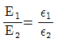
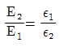
(정답률: 55%)
5. 자기 감자력(self demagnetizing force)이 평등 자화되는 자성체와 관계가 있는 것은?
- 투자율에 비례한다.
- 자계에 반비례한다.
- 감자율에 반비례한다.
- 자화의 세기에 비례한다.
(정답률: 49%)
6. 정전용량이 C0(F)인 평행판 공기콘덴서에 그림과 같이 단면적이 1/3되는 공간에 비유전율이 4인 유전체를 채웠을 때 정전용량(F)은?
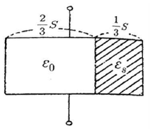
- C0
- 2C0
- 3C0
- 4C0
(정답률: 57%)
7. 전하 +Q와 전류 +I가 무한히 긴 직선상의 도체에 각각 주어졌고 이들 도체는 진공 속에서 각각 도전율이 무한대인 물질로 된 무한도체 평면과 평행하게 놓여 있다. 이 경우 영상법에 의한 영상 전하와 영상 전류는? (단, 전류는 직류이다.)
- +Q, +I
- -Q, -I
- +Q, -I
- -Q, +I
(정답률: 57%)
8. 무손실 매질에서 고유임피던스 η=60π, 비투자율 μT=1, 자계 H=-0.1cos(ωt-z)ax+0.5sin(ωt-z)ay AT/m일 때 각속도(rad/s)는?
- 0.5×108
- 1.5×108
- 3×108
- 6×108
(정답률: 33%)
9. 표피효과와 관계있는 식은?
- ∇×B=0
- ∇×D=ρ
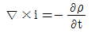
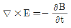
(정답률: 50%)
10. 진공 중에서 전계
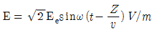
의 평면전자파가 있다. 이때 자계의 실효치는 약 몇 AT/m 인가?- 2.65 Ee×10-1
- 2.65 Ee×10-2
- 2.65 Ee×10-3
- 2.65 Ee×10-4
(정답률: 57%)
11. 공기중에 두 개의 무한장 직선 도체를 그림과 같이 간격 d(m)로 평행하게 놓고, 각 직선 도체에 전류 I1(A), I2(A)를 같은 방향으로 흘릴 경우, 두 직선도체 사이에 작용하는 힘(N/m)은?
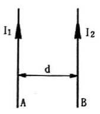
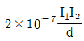
, 흡입력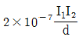
, 반발력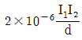
, 흡입력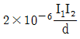
, 반발력
(정답률: 59%)
12. 정전용량 20μF인 공기 평행판 축전기에 0.01C의 전하량을 충전했을 때, 두 평행판 사이에 비유전율 10인 유전체를 채우면 유전체 표면에 발생하는 분극 전하량(C)의 크기는?
- 0.009
- 0.01
- 0.09
- 0.1
(정답률: 30%)
13. 그림과 같은 모양의 자화곡선을 나타내는 자성체 막대를 충분히 강한 평등자계에서 매분 3000회 회전시킬 때 자성체는 단위체적당 매초 약 몇 kcal의 열이 발생하는가? (단, Br=2Wb/m2, HL=500AT/m, B=μH에서 μ는 일정하지 않음)
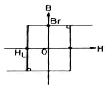
- 11.7
- 47.6
- 70.2
- 200
(정답률: 56%)
14. 자유공간에서 x방향으로 진행하는 평면 전자파에서 암페어 주회적분의 법칙을 나타내는 맥스웰 전자방정식의 y성분은?
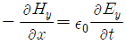
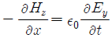
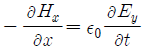
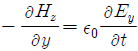
(정답률: 40%)
15. 공기 중에 한 변이 40cm인 정사각형 평행평판 콘덴서가 있다. 극판의 간격을 4mm로 하고 극판간에 100V의 전위차를 주면 축적되는 전하량은 약 몇 C인가?
- 3.54×10-8
- 3.54×10-9
- 6.56×10-9
- 6.56×10-8
(정답률: 50%)
16. 전자파의 기본 성질이 아닌 것은?
- 횡파이다.
- 반사, 굴절 현상이 나타난다.
- 완전도체 표면에서는 전부 흡수한다.
- 전계의 방향과 자계의 방향은 서로 수직이다.
(정답률: 48%)
17. 단면적 4cm2의 철심에 6×10-4 Wb의 자속을 통하게 하려면 2800AT/m의 자계가 필요하다. 이 철심의 비투자율은 약 얼마인가?
- 43
- 75
- 324
- 426
(정답률: 50%)
18. 단위 길이당 정전용량 및 인덕턴스가 각각 0.2μF/m, 0.5mH/m인 전송선의 특성 임피던스는 몇 Ω인가?
- 50
- 75
- 125
- 250
(정답률: 59%)
19. 환상 철심에 권수 NA인 A코일과 권수 NB인 B코일이 있을 때 코일 A의 자기인덕턴스가 LA(H)라면 두 코일간의 상호인덕턴스는 몇 H/m 인가? (단, A코일과 B코일 간의 누설자속은 없는 것으로 한다.)
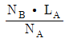
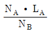
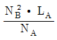
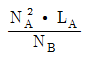
(정답률: 55%)
20. 다음의 전위함수에서 라플라스 방정식을 만족하지 않는 것은?
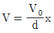
- V=rcosθ+ø
- V=ρcosθ+z
- V=x2-y2+z2
(정답률: 60%)
2과목: 회로이론
21. 다음 설명이 의미하는 것은?
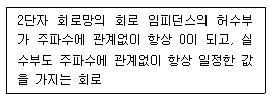
- 역회로
- 정저항 회로
- L-C회로
- 카워형 회로
(정답률: 71%)
22. 다음과 같은 결합 공진회로에서 C1과 C2를 조정하여 두 폐회로가 모두 공진 상태에 있을 때 결합계수를 변화시킨다면 i2가 최대로 되는 상태는?
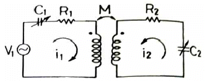
- 밀결합될 때
- 소결합될 때
- 임계결합될 때
- 같은 방향으로 결합될 때
(정답률: 52%)
23. 구동점 임피던스에서 영점(zero)은?
- 전압이 가장 큰 상태이다.
- 회로를 개방한 상태이다.
- 회로를 단락한 상태이다.
- 전류가 흐르지 않는 상태이다.
(정답률: 61%)
24. v(t)=sinω0t를 Fourier 변환한 V(ω)을 구하면?
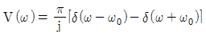
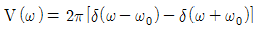
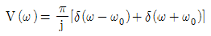
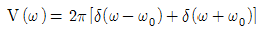
(정답률: 37%)
25. R-L 병렬회로에서 일정하게 인가된 정현파 전류의 위상 θ에 대하여 저항에 흐르는 전류 위상 θ1 과 인덕터에 흐르는 전류 위상 θ2의 관계를 올바르게 나타낸 것은?
- θ ＜ θ1 ＜ θ2
- θ2 ＜ θ1 ＜ θ
- θ2 ＜ θ ＜ θ1
- θ1 ＜ θ ＜ θ2
(정답률: 39%)
26. 다음 회로의 구동점 임피던스가 정저항 회로가 되기 위한 Z1, Z2 및 R의 관계는?
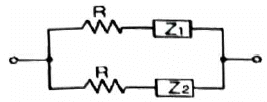
- Z1Z2=R
- Z1Z2=R2
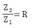
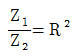
(정답률: 58%)
27. 기함수 및 반파대칭인 비정현파에 포함된 고조파가 어느 파에 속하는가?
- 제2고조파
- 제4고조파
- 제5고조파
- 제6고조파
(정답률: 54%)
28. 어떤 코일에 흐르는 전류가 0.01초 사이에 일정하게 60A에서 20A로 변할 때 20V의 기전력이 발생하면 자기 인덕턴스는 몇 mH인가?
- 5
- 10
- 20
- 200
(정답률: 59%)
29. 그림과 같은 회로에서 스위치를 닫았을 때 과도분을 포함하지 않기 위한 R은 몇 Ω인가?
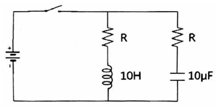
- 100
- 200
- 300
- 1000
(정답률: 38%)
30. 회로에서 a, b단자에 흐르는 전류는 몇 A인가?(오류 신고가 접수된 문제입니다. 반드시 정답과 해설을 확인하시기 바랍니다.)
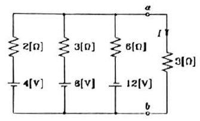
- 0.5
- 5
- 0.1
- 1
(정답률: 50%)
31. R-L-C 직렬회로가 공진 주파수보다 높은 주파수 영역에서 동작할 때, 이 회로는?
- 공진 회로
- 용량성 회로
- 저항성 회로
- 유도성 회로
(정답률: 50%)
32. ω=200rad/s에서 동작하는 두 개의 회로소자로 구성된 직렬회로에서 전류가 전압보다 45° 앞설 때, 이 소자 중 하나가 5Ω 저항일 경우 나머지 소자와 그 값은?
- L, 0.1H
- L, 0.01H
- C, 0.001F
- C, 0.0001F
(정답률: 66%)
33. 다음 전달 함수에 관한 설명 중 옳은 것은?
- 부동작 시간 요소의 전달 함수는
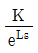
이다. - 비례 요소의 전달 함수는
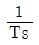
이다. - 미분 요소의 전달 함수는 K이다.
- 2차 지연 요소의 전달 함수는
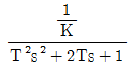
이다.
(정답률: 40%)
34. 회로망 함수의 극점과 영점이 그림과 같을 때 f(t)는?(오류 신고가 접수된 문제입니다. 반드시 정답과 해설을 확인하시기 바랍니다.)
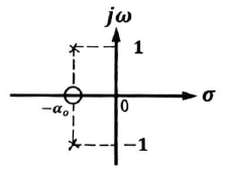
- f(t)=-α0t cos ωt
- f(t)=-α0t sin ωt
- f(t)=tsin ωt
- f(t)=α0t cos ωt
(정답률: 35%)
35. 공급 전압이 100V이고, 회로에 전류가 10A가 흐른다고 할 때, 이 회로의 유효전력은 몇 W인가? (단, 전압과 전류의 위상차는 30°이다.)
- 125√3
- 500
- 500√3
- 1000
(정답률: 52%)
36. 무손실 전송 선로의 특성 임피던스 Z0는? (단, R, L, G, C는 각각 단위 길이당의 저항, 인덕턴스, 컨덕턴스, 커패시턴스이다.)
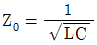
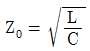
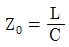
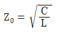
(정답률: 62%)
37. 다음과 같은 Z파라미터로 표시되는 4단자망의 1-1´ 단자 간에 4A, 2-2´ 단자 간에 1A의 정전류원을 연결하였을 때, 1-1´ 단자 간의 전압(E1)과 2-2´ 단자 간의 전압 (E2)을 각각 옳게 구한 것은? (단, Z파라미터 단위는 Ω이다.)
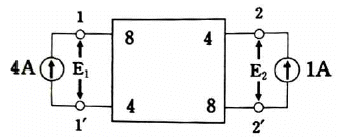
- E1＝18V, E2＝12V
- E1＝36V, E2＝24V
- E1＝42V, E2＝-24V
- E1＝48V, E2＝12V
(정답률: 50%)
38. 다음 결합 회로의 합성 인덕턴스는?
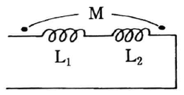
- Leg＝L1+L2+M
- Leg＝L1+L2+2M
- Leg＝L1+L2-M
- Leg＝L1+L2-2M
(정답률: 62%)
39. 다음 회로에서 차단주파수(fc)는 얼마인가?
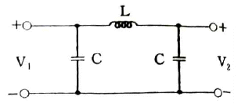
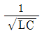
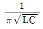
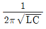
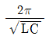
(정답률: 36%)
40. f(t)=2sint+3cost로 표시된 정현파의 라플라스 변환을 바르게 나타낸 것은?
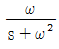
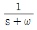
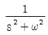
(정답률: 58%)
3과목: 전자회로
41. 그림의 회로에서 Vout은? (단, A=RC/2r′e, v2=0V이다.)
- v1
- Av1
- v2
- Av2
(정답률: 40%)
42. TTL과 C-MOS의 입출력 조건이 아래의 표와 같다고 할 때, TTL과 C-MOS 소자를 접속하는 방법으로 틀린 것은?
(정답률: 56%)
43. 다음 중 멀티바이브레이터에 대한 설명으로 틀린것은?
- 회로의 시정수로 출력파형의 주기가 결정된다.
- 쌍안정 멀티바이브레이터의 구성은 직류성분으로 결합되어 있다.
- 출력에 고차의 고조파를 포함한다.
- 모든 멀티바이브레이터의 구성은 교류성분으로 결합되어 있다.
(정답률: 54%)
44. 8진수 (326)8을 10진수로 변환한 것은?
- 124
- 148
- 168
- 214
(정답률: 73%)
45. 그림과 같은 귀환회로에서 입력임피던스(Rif)의 값을 나타낸 식으로 옳은 것은?
(정답률: 44%)
46. 수정발진기에 관한 설명 중 틀린 것은?
- 압전 효과를 이용하여 기계적인 진동으로 기전력을 얻는다.
- RC 공진회로에 비해 주파수 안정도가 매우 높다.
- 수정편의 절단(cut)하는 방법에 따라 전기적 온도 특성이 다르다.
- 수정편이 같은 두께일 때 X컷(X cut)보다 Y컷(Y cut)의 발진주파수가 높다.
(정답률: 59%)
47. 다음과 같은 부귀환 증폭기의 출력 임피던스는 귀환이 없을 때에 비하여 어떻게 변하는가?
- 출력 임피던스가 감소한다.
- 출력 임피던스가 증가한다.
- hie배가 된다.
- 변화가 없다.
(정답률: 44%)
48. 다음 회로에서 콘덴서(C)의 역할은?
- 중화용
- 기생 진동 방지용
- 상호 변조 방지용
- 저주파 특성 개선용
(정답률: 60%)
49. 다음 중 불 대수의 관한 법칙 중 틀린 것은?
- X+YZ=(X+Y)(X+Z)
- X(X+1)=X
(정답률: 72%)
50. 전송하고자 하는 비트열이 3-bit인 짝수 패리티 발생기는?
(정답률: 55%)
51. 다음의 회로에서 A, B가 입력이고 C, D가 출력일 때 이 회로의 명칭은?
- NOR로 구성된 D 플립플롭
- NOR로 구성된 RS 플립플롭
- NAND로 구성된 D 플립플롭
- NAND로 구성된 RS 플립플롭
(정답률: 45%)
52. 이상적인 연산증폭기의 특징에 관한 설명으로 틀린 것은?
- 입력 오프셋전압은 0이다.
- 오픈 루프 전압이득이 무한대이다.
- 동상 신호 제거비(CMRR)가 0이다.
- 입력 바이어스 전류가 0이다.
(정답률: 65%)
53. 100W용 실리콘 트랜지스터(25℃에서 정격)에서 사용온도가 25℃를 초과할 때 열저항이 0.5W/℃이다. 트랜지스터의 온도가 100℃일 때의 최대허용 소모전력(PD)은?(오류 신고가 접수된 문제입니다. 반드시 정답과 해설을 확인하시기 바랍니다.)
- 75W
- 73.5W
- 70W
- 62.5W
(정답률: 43%)
54. N-채널 JFET에서 드레인-소스 전압의 변화에 대해서 전류가 일정한 영역에서 드레인 전류가 증가하는 경우는?
- 게이트-소스 바이어스 전압이 감소할 때
- 게이트-소스 바이어스 전압이 증가할 때
- 게이트-드레인 바이어스 전압이 감소할 때
- 게이트-드레인 바이어스 전압이 증가할 때
(정답률: 45%)
55. 다음 그림과 같은 연산증폭기 회로의 출력전압(Vo)는?
(정답률: 59%)
56. 다음 부귀환 연산증폭기 회로에서 귀환율(β)는?
(정답률: 61%)
57. 기본적인 트랜지스터에서 스위치로서의 동작을 옳게 설명한 것은?
- 차단과 포화로 동작된다.
- 전압이득은 입력전압과 출력전압의 비이다.
- Rc와 r´e는 전압이득을 결정한다.
- 작은 신호를 큰 신호로 만드는 동작이다.
(정답률: 62%)
58. 저역 능동 필터 회로의 감쇠계수(DF, damping factor)에 영향을 주는 것은?
- 연산증폭기 이득
- 부귀환 효과
- 정귀환 효과
- 필터의 대역폭
(정답률: 34%)
59. 비동기식 8진 업-카운터 회로에서 초기상태가 CBA=000이다. 입력에 클럭 펄스가 14개 인가된 후의 CBA의 상태는 어떻게 되는가? (단, C는 MSB이고, 모든 플립플롭의 J=K=1이다.)
- CBA=111
- CBA=100
- CBA=101
- CBA=110
(정답률: 34%)
60. 12V 직류전압원에 저항(R)과 2개의 LED가 직렬로 연결된 회로에서 각 LED에 흐르는 전류가 100mA이상 되도록 하는 저항값은? (단, LED의 전압강하는 2.2V로 하시오.)
- 76Ω
- 86Ω
- 100Ω
- 120Ω
(정답률: 54%)
4과목: 물리전자공학
61. 에너지 분포함수가 “0”이라는 것은 무엇을 의미하는가?
- 입자가 에너지 상태에 채워질 확률이 1이다.
- 에너지 상태가 비어 있다.
- 입자가 에너지 상태에 채워질 확률이 0.5이다.
- 입자가 에너지 상태에 채워질 확률이 0.3이다.
(정답률: 62%)
62. 양자화된 에너지로 분포되나 파울리(Pauli)의 베타 원리가 적용되지 않는 광자를 취급하는 분포함수는?
- Sommerfeld 분포 함수
- Fermi-Dirac 분포 함수
- Bose-Einstein 분포 함수
- Maxwell-Boltzmann 분포 함수
(정답률: 46%)
63. 초전도 현상에 관한 설명으로 옳은 것은?
- 물질의 격자 진동이 심하게 되어 파괴된다.
- 저항이 무한으로 커짐에 따라 전류가 흐르지 않는다.
- 저온에서 격자진동이 저하하여 결국 저항이 0으로 된다.
- 전자의 이동도 μ가 전계 강도 E의 평방근에 비례한다.
(정답률: 57%)
64. 트랜지스터의 출력 특성에는 바이어스(bias) 구성에 의한 4가지 동작 영역이 있다. 증폭동작이 가능한 영역으로 옳은 것은?
- 포화(Saturation) 영역
- 활성(Active) 영역
- 차단(Cut-off) 영역
- 역할성(Inverted Active) 영역
(정답률: 59%)
65. 이동도(mobility)에 관한 설명으로 틀린 것은?
- 이동도의 단위는 [m2/V·s]이다.
- 도전율이 크면 이동도도 크다.
- 온도가 증가하면 이동도는 증가한다.
- 이동도가 크면 높은 주파수에 적합하다.
(정답률: 39%)
66. MOSFET와 BJT의 최상의 특성만을 결합시킨 형태의 반도체소자는?
- IGBT
- SCR
- TRIAC
- GTO
(정답률: 57%)
67. 금속과 반도체의 정류성 접촉을 이용한 반도체는?
- Zener Diode
- Tunnel Diode
- Impact Diode
- Schottky Barrier Diode
(정답률: 47%)
68. 접합 트랜지스터의 증폭작용은 베이스 영역에서의 어떤 전하들의 확산에 의한 것인가?
- 소수 캐리어
- 다수 캐리어
- 도너(Donor) 이온
- 억셉터(Acceptor) 이온
(정답률: 35%)
69. 다음 중 일함수에 관한 설명으로 틀린 것은?
- 일함수는 이탈 준위와 페르미 준위와의 차로 나타난다.
- 일함수가 크면 적은 에너지로 많은 전자를 방출시킬 수 있다.
- 일함수는 금속의 종류나 표면의 형태에 따라 다른 값을 갖는다.
- 1개의 전자를 금속체로부터 공간으로 방출하는데 필요한 일의 양을 말한다.
(정답률: 54%)
70. pn 접합 다이오드의 역포화 전류를 감소시키기 위한 방법으로 틀린 것은?
- 저항률을 낮게 한다.
- 접합 면적을 적게 한다.
- 다수 캐리어의 밀도를 높인다.
- 소수 캐리어의 밀도를 높인다.
(정답률: 42%)
71. 주양자수 n=3인 전자각 M에 들어갈 수 있는 최대 전자수는?
- 2
- 8
- 18
- 32
(정답률: 43%)
72. 다음 중 SCR에 관한 설명으로 틀린 것은?
- 전류제어형 소자이다.
- 게이트 전극이 전도에 영향을 준다.
- 터널 다이오드와 똑같은 특성의 부성저항 소자이다.
- 다이라트론(thyratron)과 비슷한 특성을 가지고 있다.
(정답률: 55%)
73. 실내온도에서 진성반도체(Si)의 페르미 에너지(Ef)가 근사적으로 금지대역의 중앙에 위치한다고 가정할 때, 전자가 전도대의 바닥상태에 있을 확률은? (단, 실온에서 Si의 Eg=1.12eV이다.)
- 1
- 0.5
- 1.1×10-6
- 4.4×10-10
(정답률: 17%)
74. 반도체의 특성에 대한 설명으로 틀린 것은?
- 홀 효과가 크다.
- 빛을 쪼이면 도전율이 증가한다.
- 불순물을 첨가하면 도전율이 감소한다.
- 온도에 의해 도전율이 현저하게 변화한다.
(정답률: 49%)
75. 전자볼트(electron volt, eV)는 전자 한 개가 1볼트의 전위차를 통과할 때 얻는 운동 에너지를 1[eV]로 정한 것이다. 1[eV]는 대략 몇 J(joule)인가?
- 9.109×10-31
- 1.759×10-11
- 1.602×1019
- 6.547×1034
(정답률: 50%)
76. 베이스 증폭 접합형 트랜지스터의 전류 증폭율(α)은 0.95이고, 차단 주파수(fα)는 5MHz이다. 이미터 접지로 사용할 때 차단 주파수(fβ)는?(오류 신고가 접수된 문제입니다. 반드시 정답과 해설을 확인하시기 바랍니다.)
- 263kHz
- 475kHz
- 2.63MHz
- 4.75MHz
(정답률: 27%)
77. N형 불순물로 사용될 수 없는 것은?
- 인(P)
- 비소(As)
- 안티몬(Sb)
- 알루미늄(Al)
(정답률: 59%)
78. 반도체 재료의 제조시 고유저항을 측정하는 이유로 옳은 것은?
- 불순물 반도체의 캐리어 농도를 결정하기 때문
- 다결정 재료의 수명 시간을 결정하기 때문
- 진성 반도체의 캐리어 농도를 결정하기 때문
- 캐리어의 이동도를 결정하기 때문
(정답률: 43%)
79. 전자가 외부의 힘(열, 빛, 전장)을 받아 핵의 구속력으로부터 벗어나 결정 내를 자유로이 이동할 수 있는 자유전자의 상태로 존재하는 에너지대는?
- 충만대(filled band)
- 금지대(forbidden band)
- 가전자대(valence band)
- 전도대(conduction band)
(정답률: 56%)
80. 어떤 금속의 표면전위장벽(EB)가 13.47eV이고, 페르미 에너지(Ef)가 8.95eV일 때, 이 금속의 일함수(Ew)는?
- 4.52eV
- 9.04eV
- 11.21eV
- 22.42eV
(정답률: 66%)
5과목: 전자계산기일반
81. 다음 중에서 UNIX의 쉘(shell)에 대한 설명이 가장 옳은 것은?
- 명령어를 해석한다.
- UNIX 커널의 일부이다.
- 문서처리 기능을 갖는다.
- 디렉토리 관리 기능을 갖는다.
(정답률: 53%)
82. Associative 메모리와 가장 관련이 없는 것은?
- CAM(Content Addressable Memory)
- 고속의 Access
- Key 레지스터
- MAR(Memory Address Register)
(정답률: 54%)
83. 채널에 의한 입출력 방식에서 채널(channel)의 종류가 아닌 것은?
- counter channel
- selector channel
- multiplexer channel
- block multiplexer channel
(정답률: 45%)
84. 객체지향 언어이고 웹상의 응용 프로그램에 적합하도록 설계된 언어는?
- 포트란(FORTRAN)
- C
- 자바(java)
- SQL
(정답률: 60%)
85. 10진수 255.875를 16진수로 변환한 것으로 옳은 것은?
- FE.D
- FF.E
- 9F.8
- FF.5
(정답률: 52%)
86. 2진수 (1110.0111)2을 16진수로 변환한 것으로 옳은 것은?
- (7.7)16
- (14.14)16
- (E.7)16
- (E.E)16
(정답률: 55%)
87. 중앙처리장치의 주요기능과 담당하는 곳(역할)의 연결이 틀린 것은?
- 기억기능 : 레지스터(register)
- 연산기능 : 연산기(ALU)
- 전달기능 : 누산기(accumulator)
- 제어기능 : 조합회로와 기억소자
(정답률: 68%)
88. 프로그램 카운터가 명령어의 번지와 더해져서 유효번지를 결정하는 어드레싱 모드는?
- 레지스터 모드
- 간접번지 모드
- 상대번지 모드
- 인덱스 어드레싱 모드
(정답률: 40%)
89. 컴퓨터의 구조 중 스택 구조에 대한 설명으로 가장 옳지 않은 것은?
- 스택 메모리의 번지 레지스터로서 스택 포인터가 있으며 LIFO로 동작한다.
- 메모리에 항목을 저장하는 것을 PUSH라 하고 빼내는 동작을 POP이라고 한다.
- PUSH, POP 동작 시 SP를 증가시키거나 감소시키는 문제는 스택의 구성에 따라 달라질 수 있다.
- PUSH, POP 명령에서 스택과 오퍼랜드 사이의 정보 전달을 위해서는 번지 필드가 필요 없다.
(정답률: 62%)
90. CPU를 구성하는 구성 요소로서 ALU에서 처리하는 자료를 항상 기억하며 처리하고자 하는 데이터를 일시 기억하는 레지스터는?
- ACC
- SR
- IR
- SP
(정답률: 48%)
91. 파이프라이닝(Pipelining)에 대한 설명으로 가장 옳지 않은 것은?
- 프로세서가 이전 명령어를 마치기 전에 다음 명령어 수행을 시작하는 기법이다.
- CPU가 필요한 데이터를 찾을 때 읽기와 쓰기 동작을 향상시키는 기법이다.
- 명령어 사이클들이 동 시간대에 중첩되어 처리되는 개념을 나타낸다.
- 단계별 시간차를 거의 동일하게 하면 속도향상을 꾀할 수 있다.
(정답률: 40%)
92. 콘솔(console)이나 보조기억장치에서 마이크로프로그램이 로드(load)되는 기법은?
- dynamic micro-programming
- static micro-programming
- horizontal micro-programming
- vertical micro-programming
(정답률: 58%)
93. 기억번지와 1대 1로 부여되는 번지를 무슨 번지라고 하는가?
- 상대번지
- 절대번지
- 직접번지
- 간접번지
(정답률: 39%)
94. 다음 중에서 일반적인 직렬 전송 통신 속도를 나타낼 때 사용하는 단위는?
- LPM(Line Per Minute)
- CPM(Character Per Minute)
- CPS(Character Per Second)
- BPS(Bit Per Second)
(정답률: 63%)
95. 다음 C 프로그램의 실행 결과로 옳은 것은?
- i= 4, b= 6
- i= 5, b= 10
- i= 6, b= 15
- i= 10, b= 55
(정답률: 52%)
96. 스택(stack)이 반드시 필요한 명령문 형식은?
- 0-주소 형식
- 1-주소 형식
- 2-주소 형식
- 3-주소 형식
(정답률: 44%)
97. 다음 논리 연산자 중 데이터의 필요없는 부분을 지우고자 할 때 쓰는 연산자는?
- AND
- OR
- EX-OR
- NOT
(정답률: 60%)
98. 다음 중 데이터통신에 널리 쓰이며, 특히 마이크로프로세서용으로 많이 사용되는 코드는?
- EBCDIC 코드
- Excess-3 코드
- ASCII 코드
- Gray 코드
(정답률: 49%)
99. 주소 모드(addressing mode)에서 현재의 명령어 번지와 프로그램 카운터의 합으로 표시되는 방식은?
- direct addressing mode
- indirect addressing mode
- absolute addressing mode
- relative addressing mode
(정답률: 38%)
100. C 언어의 지정어(reserved word)가 아닌 것은?
- auto
- default
- enum
- sum
(정답률: 38%)